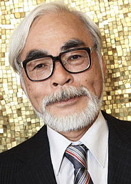

Studio Ghibli: A History
Intro
Studio Ghibli, Inc. (株式会社スタジオジブリ Kabushiki-gaisha Sutajio Jiburi?) is a Japanese animation film studio based in Koganei, Tokyo, Japan. The studio is best known for its anime feature films, and has also produced several short films, television commercials, and one television film. It was founded in June 1985 after the success of Nausicaä of the Valley of the Wind (1984), with funding by Tokuma Shoten. Eight of Studio Ghibli's films are among the 15 highest-grossing anime films made in Japan, with Spirited Away (2001) being the highest, grossing over $274 million worldwide. Many of their works have won the Animage Anime Grand Prix award, and four have won the Japan Academy Prize for Animation of the Year. In 2002, Spirited Away won a Golden Bear and an Academy Award for Best Animated Feature Film in 2003. On August 3, 2014, Studio Ghibli announced it was temporarily halting production following the retirement of director Hayao Miyazaki.
Name Origin
The name Ghibli was given by Hayao Miyazaki bearing the Caproni Ca.309 Ghibli in mind. The Italian noun "ghibli" is based on the Arabic name for the sirocco, or Mediterranean wind, the idea being the studio would "blow a new wind through the anime industry". Although the Italian word is pronounced with a very hard ɡ, the Japanese pronunciation of the studio's name is with a soft g.
History
 Founded in June 1985, the studio is headed by the directors Hayao Miyazaki (shown right) and Isao Takahata and the producer Toshio Suzuki. Prior to the formation of the studio, Miyazaki and Takahata had already had long careers in Japanese film and television animation and had worked together on Hols: Prince of the Sun and Panda! Go, Panda!; and Suzuki was an editor at Tokuma Shoten's Animage manga magazine. The studio was founded after the success of the 1984 film Nausicaä of the Valley of the Wind, written and directed by Miyazaki for Topcraft and distributed by Toei Company. The origins of the film lie in the first two volumes of a serialized manga written by Miyazaki for publication in Animage as a way of generating interest in an anime version. Suzuki was part of the production team on the film and founded Studio Ghibli with Miyazaki, who also invited Takahata to join the new studio. The studio has mainly produced films by Miyazaki, with the second most prolific director being Takahata (most notably with Grave of the Fireflies). Other directors who have worked with Studio Ghibli include Yoshifumi Kondo, Hiroyuki Morita, Gorō Miyazaki, and Hiromasa Yonebayashi. Composer Joe Hisaishi has provided the soundtracks for most of Miyazaki's Studio Ghibli films. In their book Anime Classics Zettai!, Brian Camp and Julie Davis made note of Michiyo Yasuda as "a mainstay of Studio Ghibli’s extraordinary design and production team".[5] At one time the studio was based in Kichijōji, Musashino, Tokyo.[6] In August 1996, Disney and Tokuma Shoten Publishing agreed that Disney would distribute internationally Tokuma's Studio Ghibli animated films. Many of Ghibli's films in Japan are theatrically distributed by Toho while home video releases are handled by Walt Disney Studios Home Entertainment Japan. Wild Bunch holds the international sales rights to many of Ghibli's films. Ghibli's main international distribution partners also include Disney (Japan Home Video, Taiwan, North America, France), GKIDS (North America), StudioCanal UK, and Madman Entertainment (Australia). Over the years, there has been a close relationship between Studio Ghibli and the magazine Animage, which regularly runs exclusive articles on the studio and its members in a section titled "Ghibli Notes." Artwork from Ghibli's films and other works are frequently featured on the cover of the magazine. Between 1999 and 2005 Studio Ghibli was a subsidiary of Tokuma Shoten, the publisher of Animage. In October 2001, the Ghibli Museum opened in Tokyo. It contains exhibits based on Studio Ghibli films and shows animations, including a number of short Studio Ghibli films not available elsewhere. The studio is also known for its strict "no-edits" policy in licensing their films abroad due to Nausicaä of the Valley of Wind being heavily edited for the film's release in the United States as Warriors of the Wind. The "no cuts" policy was highlighted when Miramax co-chairman Harvey Weinstein suggested editing Princess Mononoke to make it more marketable. A Studio Ghibli producer is rumoured to have sent an authentic Japanese sword with a simple message: "No cuts". On February 1, 2008, Toshio Suzuki stepped down from the position of Studio Ghibli president, which he had held since 2005, and Koji Hoshino (former president of Walt Disney Japan) took over. Suzuki said he wanted to improve films with his own hands as a producer, rather than demanding this from his employees. Suzuki decided to hand over the presidency to Hoshino because Hoshino has helped Studio Ghibli to sell its videos since 1996, also helping to release the Princess Mononoke film in the United States. Suzuki still serves on the company's board of directors. Two Studio Ghibli short films created for the Ghibli Museum were shown at the Carnegie Hall Citywise Japan NYC Festival: "House Hunting" and "Mon Mon the Water Spider" were screened on March 26, 2011. Takahata developed a project for release after Gorō Miyazaki's (director of Tales from Earthsea and Hayao's son) From Up on Poppy Hill - an adaptation of The Tale of the Bamboo Cutter. Hayao Miyazaki's last film he directed before retiring from feature films (as of 2014) is The Wind Rises which is about the Mitsubishi A6M Zero and its founder. Sunday, September 1, 2013, Hayao Miyazaki held a press conference in Venice, confirming his retirement saying: "I know I've said I would retire many times in the past. Many of you must think, 'Once again.' But this time I am quite serious." On January 31, 2014, it was announced that Gorō Miyazaki will direct his first anime TV series, Sanzoku no Musume Rōnya, an adaptation of Astrid Lindgren's Ronia the Robber's Daughter for NHK. The series is computer-animated, produced by Polygon Pictures, and co-produced by Studio Ghibli. In March 2014 Toshio Suzuki retired as a producer and assumed a new position of general manager. Yoshiaki Nishimura replaced Suzuki in the producer role. On August 3, 2014, Toshio Suzuki announced that Studio Ghibli would take a "brief pause" to re-evaluate and restructure in the wake of Miyazaki's retirement. He stated some concerns about where the company would go in the future.[19] This has led to speculation that Studio Ghibli will never produce another feature film again. On November 7, 2014, Miyazaki stated, "That was not my intention, though. All I did was announce that I would be retiring and not making any more features."